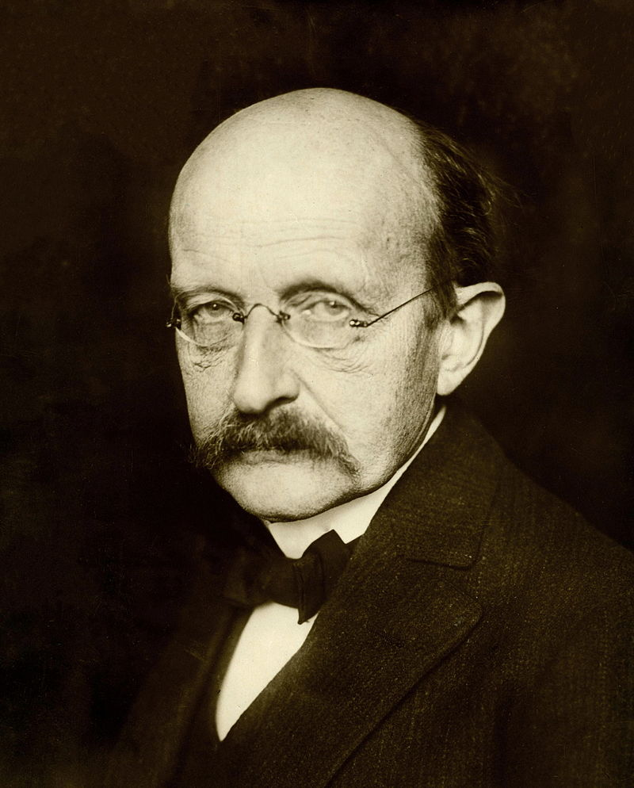
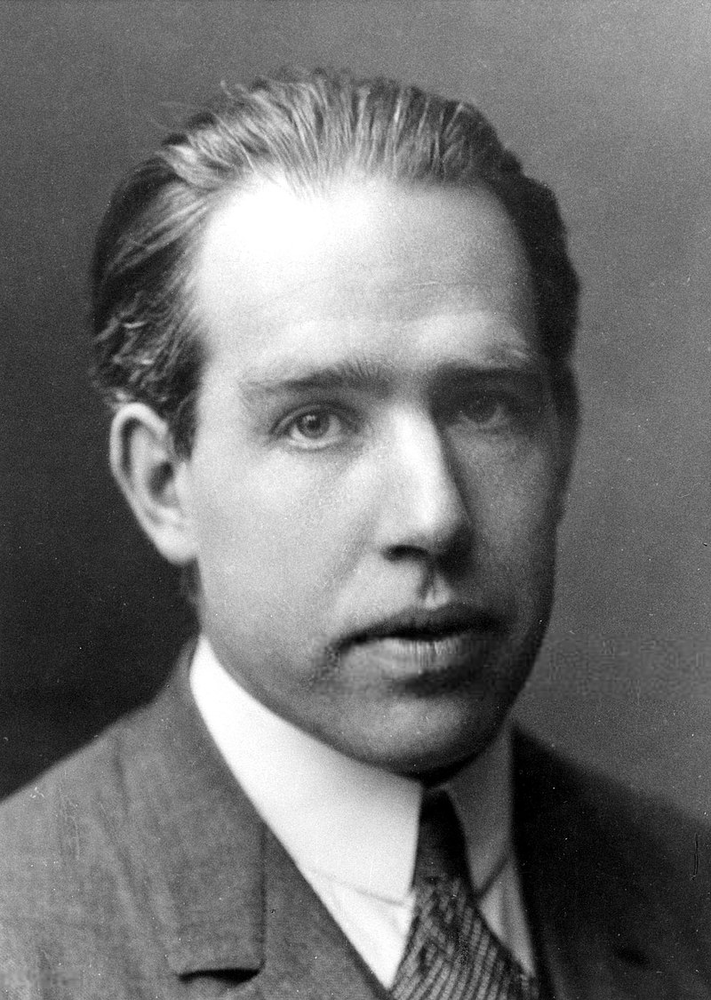

Publications
The Most Astounding Papers of Quantum Physics
- On a relativistically invariant formulation of the quantum theory of wave fields
- Space-Time Approach to Quantum Electrodynamics
- The Quantum Theory of the Emission and Absorption of Radiation
- A suggested interpretation of the quantum theory in terms of 'hidden' variables 1
- The Statistical interpretation of quantum mechanics
- The quantum theory of the electron
- On a Heuristic Point of View about the Creatidn and Conversion of Light
- Can Quantum-Mechanical Description of Physical Reality be Considered Complete?
- On the Constitution of Atoms and Molecules
- The Connection Between Spin and Statistics
- Fine Structure of the Hydrogen Atom by a Microwave Method
- The Electromagnetic Shift of Energy Levels
- The Radiation Theories of Tomonaga, Schwinger, and Feynman
- The Scattering of α and β Particles by Matter and the Structure of the Atom
- The theory of positrons
- The development of quantum mechanics
- On the Law of Distribution of Energy in the Normal Spectrum
- Foundations of the new field theory
- Quantisation as a Problem of Proper Values (Part I)
- Quantisation as a Problem of Proper Values (Part II)
- The present situation in quantum mechanics
- On the Einstein-Podolsky-Rosen paradox

"Science is not only compatible with spirituality; it is a profound source of spirituality. When we recognize our place in an immensity of light‐years and in the passage of ages, when we grasp the intricacy, beauty, and subtlety of life, then that soaring feeling, that sense of elation and humility combined, is surely spiritual. So are our emotions in the presence of great art or music or literature, or acts of exemplary selfless courage such as those of Mohandas Gandhi or Martin Luther King, Jr. The notion that science and spirituality are somehow mutually exclusive does a disservice to both." − Carl Sagan

"The important thing is not to stop questioning. Curiosity has its own reason for existence. One cannot help but be in awe when he contemplates the mysteries of eternity, of life, of the marvelous structure of reality. It is enough if one tries merely to comprehend a little of this mystery each day." − Albert Einstein

"The role played by time at the beginning of the universe is, I believe, the final key to removing the need for a Grand Designer, and revealing how the universe created itself. … Time itself must come to a stop. You can’t get to a time before the big bang, because there was no time before the big bang. We have finally found something that does not have a cause because there was no time for a cause to exist in. For me this means there is no possibility of a creator because there is no time for a creator to have existed. Since time itself began at the moment of the Big Bang, it was an event that could not have been caused or created by anyone or anything. … So when people ask me if a god created the universe, I tell them the question itself makes no sense. Time didn’t exist before the Big Bang, so there is no time for God to make the universe in. It’s like asking for directions to the edge of the Earth. The Earth is a sphere. It does not have an edge, so looking for it is a futile exercise." ― Stephen W. Hawking

"What I am going to tell you about is what we teach our physics students in the third or fourth year of graduate school... It is my task to convince you not to turn away because you don't understand it. You see my physics students don't understand it... That is because I don't understand it. Nobody does." ― Richard P. Feynman
"Science enhances the moral value of life, because it furthers a love of truth and reverence—love of truth displaying itself in the constant endeavor to arrive at a more exact knowledge of the world of mind and matter around us, and reverence, because every advance in knowledge brings us face to face with the mystery of our own being." ―
List of important publications in physics
- On a Heuristic Point of View about the Creatidn and Conversion of Light
- On the Electrodynamics of Moving Bodies
- The Quantum Theory of Radiation
- On the Constitution of Atoms and Molecules
- Can Quantum-Mechanical Description of Physical Reality Be Considered Complete?
- Space-Time Approach to Non-Relativistic Quantum Mechanics
- On a General Method in Dynamics
- Particle Creation by Black Holes
- Equation of State Calculations by Fast Computing Machines
- Accurate measurement of large optical frequency differences with a mode-locked laser
- On the Law of Distribution of Energy in the Normal Spectrum
- Nuclear Physics: A Stationary States of Nuclei
- Quantisierung als Eigenwertproblem
- Theory of the Alternating-Gradient Synchrotron
- Second Essay on a General Method in Dynamics
- Statistical methods In neutron diffraction
- The Acceleration of Electrons by Magnetic Induction
- The Apparent Existence of Easily Deflectable Positives
- The structure of the atom
- Possible Existence of a Neutron
- The Existence of a Neutron
- Does the Inertia of a Body Depend upon its Energy-Content?
- Investigations on the theory of the Brownian movement
- New Evidence for the Existence of a Particle of Mass Intermediate Between the Proton and Electron
- Experimental Test of Parity Conservation in Beta Decay
- On Physical Lines of Force
- Opticks: or, A Treatise of the Reflexions, Refractions, Inflexions and Colours of Light
- An Essay on the Application of mathematical Analysis to the theories of Electricity and Magnetism
- The Quantum Theory of the Electron
- Bakerian Lecture. Nuclear Constitution of Atoms
- A Theory of Electrons and Protons
- Conservation of Isotopic Spin and Isotopic Gauge Invariance
- The Mathematical Theory of Relativity
- Ultraviolet Behavior of Non-Abelian Gauge Theories
- Reliable Perturbative Results for Strong Interactions?
- Reflections on the Motive Power of Heat
- Renormalization Group and Critical Phenomena
- Scaling laws for Ising models near Tc
- On the Motion of Small Particles Suspended in Liquids at Rest Required by the Molecular-Kinetic Theory of Heat
- Elementary Principles in Statistical Mechanics
- On the Equilibrium of Heterogeneous Substances
- The Foundation of the General Theory of Relativity
- The Mathematical Optics of Sir William Rowan Hamilton: Conical Refraction and Quaternions
- Micrographia: or Some Physiological Descriptions of Minute Bodies Made by Magnifying Glasses
- The Principia: Mathematical Principles of Natural Philosophy
- The Theory of Systems of Rays
- The Wave Theory of Light
- Classical mechanics
- An Experimental Investigation of the Circumstances Which Determine Whether the Motion of Water Shall Be Direct or Sinuous, and of the Law of Resistance in Parallel Channels
- On the Theories of the Internal friction of Fluids in Motion, and of the Equilibrium and Motion of Elastic Solids
- The Positive Electron
- The Local Structure of Turbulence in Incompressible Viscous Fluid for Very Large Reynolds Numbers
- On invariant curves of area-preserving mapping of an annulus, Matematika, 1962, Volume 6, Issue 5, 51–68
- The wave nature of the electron
- On the Theory of Quanta
- The molecular scattering of light
- A new radiation
- On Stars, Their Evolution and Their Stability
- Unified Approach for Molecular Dynamics and Density-Functional Theory
- Correlations in the Motion of Atoms in Liquid Argon
- Efficient and Accurate Car-Parrinello-like Approach to Born-Oppenheimer Molecular Dynamics
- Studies of non Linear Problems
- Studies in Molecular Dynamics. I. General Method
- On the Application to Dynamics of a General Mathematical Method previously applied to Optics
- Calibrator Design for the COBE Far-Infrared Absolute Spectrophotometer (FIRAS)
- On the Various Forces of Nature
- The Effect of Magnetisation on the Nature of Light Emitted by a Substance
- The high-frequency spectra of the elements
- On the influence of magnetism on the nature of the light emitted by a substance
- 4-Year COBE DMR Cosmic Microwave Background Observations: Maps and Basic Results
- Violation of CP invariance, C asymmetry, and baryon asymmetry of the universe
- Michael Faraday's The Chemical History of a Candle
- On the Various Forces of Nature and Their Relations to Each Other: A Course of Lectures Delivered Before a Juvenile Audience at the Royal Institution
- Structure in the COBE differential microwave radiometer first-year maps
- Preliminary measurement of the cosmic background microwave spectrum by the Cosmic Background Explorer (COBE) satellite
Insightful Papers On Astrophysics And Cosmology
- The Statistics Of Peaks Of Gaussian Random Fields
- Physical Cosmology And An Exoplanet Orbiting A Solar-type Star
- Ultraluminous Infrared Galaxies And The Origin Of Quasars
- Merger rates in hierarchical models of galaxy formation
- Cosmology at Low Frequencies: The 21 cm Transition and the High-Redshift Universe
- Collapse Barriers And Halo Abundance: Testing The Excursion Set Ansatz
- Primordial Nucleosynthesis: A Critical Comparison Of Theory And Observation
- Baryon Acoustic Oscillations
- The Physics of the Intergalactic Medium
- Excursion Set Mass Functions For Hierarchical Gaussian Fluctuations
- The formation of galactic discs
- Cooling, dynamics and fragmentation of massive gas clouds: clues to the masses and radii of galaxies and clusters
- Five-year Wilkinson Microwave Anisotropy Probe Observations: Cosmological Interpretation
- Reconstructing the linear power spectrum of cosmological mass fluctuations
- Clustering in real space and in redshift space
- Formation Of Galaxies And Clusters Of Galaxies By Self-similar Gravitational Condensation
- An analytic model for the spatial clustering of dark matter haloes
- Evidence From The Motions Of Old Stars That The Galaxy Collapsed
- Perturbations Of A Cosmological Model And Angular Variations Of The Microwave Background
- Redshift-space distortions with the halo occupation distribution – I. Numerical simulations
- Halo Assembly Bias In Hierarchical Structure Formation
- Non-linear evolution of cosmological power spectra
- Weak Lensing And Cosmology
- The birth and growth of neutralino haloes
- The amplitude of mass fluctuations in the Universe
- Self-similar Gravitational Collapse In An Expanding Universe
- The imprints of primordial non-gaussianities on large-scale structure: scale dependent bias and abundance of virialized objects
- On The Spatial Correlations Of Abell Clusters
- How Small Were The First Cosmological Objects?
- Halo occupation numbers and galaxy bias
- Angular Momentum Growth In Protogalaxies
- Baryons In The Warm-hot Intergalactic Medium
- Biased clustering in the cold dark matter cosmogony
- Joint Galaxy-Lensing Observables and the Dark Energy
- Cross-correlation Lensing: Determining Galaxy And Cluster Mass Profiles From Statistical Weak-lensing Measurements
- Core condensation in heavy halos: a two-stage theory for galaxy formation and clustering
- Analytic model for galaxy and dark matter clustering
- Scale-dependent bias and the halo model
- The Observations of Relic Radiation as a Test of the Nature of X-Ray Radiation from the Clusters of Galaxies
- Probing the Statistics of the Temperature-Density Relation of the Intergalactic Medium
- The redshift-space power spectrum in the halo model
- Toward Equations of Galactic Structure
"Philosophy [nature] is written in that great book which ever is before our eyes -- I mean the universe -- but we cannot understand it if we do not first learn the language and grasp the symbols in which it is written. The book is written in mathematical language, and the symbols are triangles, circles and other geometrical figures, without whose help it is impossible to comprehend a single word of it; without which one wanders in vain through a dark labyrinth." ― Galileo Galilei
"For a parallel to the lesson of atomic theory regarding the limited applicability of such customary idealizations, we must in fact turn to quite other branches of science, such as psychology, or even to that kind of epistemological problems with which already thinkers like Buddha and Lao Tzu have been confronted, when trying to harmonize our position as spectators and actors in the great drama of existence." ― Niels Bohr
Copyright © 2018 myw3schools. All rights reserved.